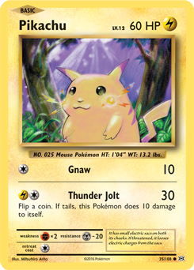
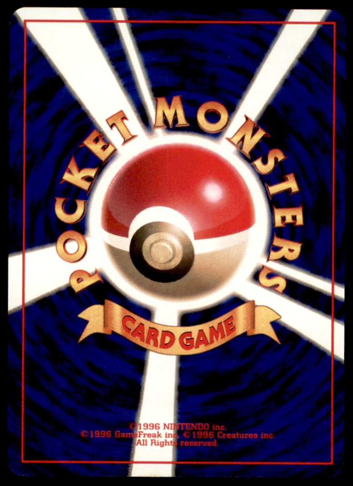

První karty Pokémon měly jednoduchý design s ikonickým pozadím modré barvy a Pokéballu uprostřed. Na přední straně se nacházel Pokémon, jeho útoky a počet životů (HP). Base Set je dodnes jedním z nejcennějších vydání pro sběratele.

